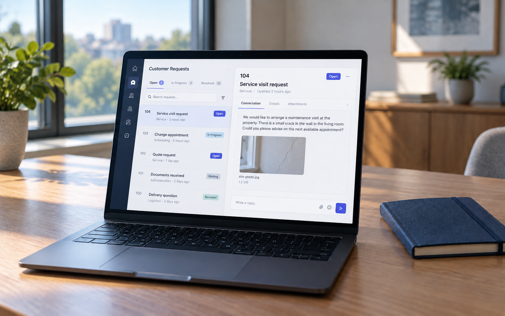
service-application
1585 x 992 | In use | photo
A company application showing a customer service request and its attached photo
- Card: /software/custom-software/
- Article: /software/custom-software/ (section 1)
Original sources, current placements and reusable reserves. Only selected assets are exported to the website.

1585 x 992 | In use | photo
A company application showing a customer service request and its attached photo
1586 x 992 | In use | photo
Planning the case list, case details and employee tasks for a company application
1586 x 992 | In use | photo
TypeScript application development and test results in a code editor
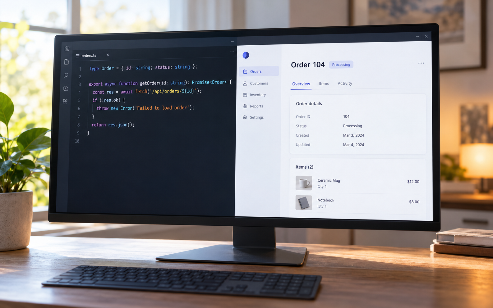
1586 x 992 | In use | photo
A TypeScript data contract beside the matching application view
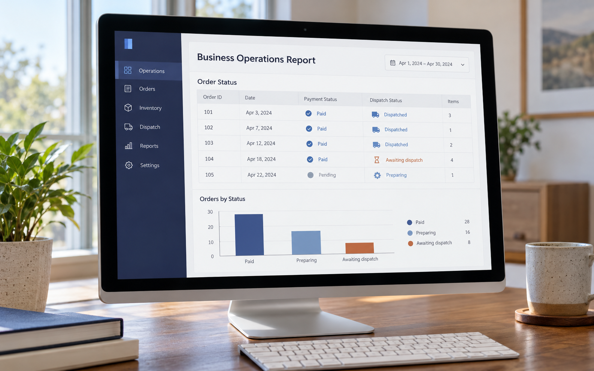
1586 x 992 | In use | photo
An operations report combining payment and dispatch statuses for orders
1586 x 992 | In use | photo
Comparing an operations report with source records on a desk
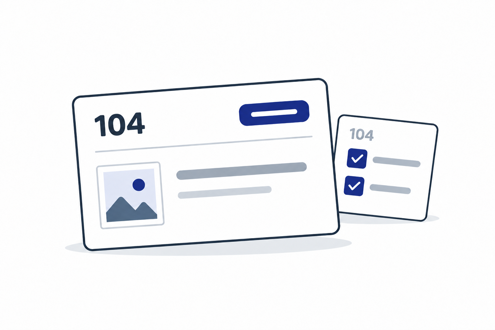
1536 x 1024 | In use | illustration
A customer case and its assigned task
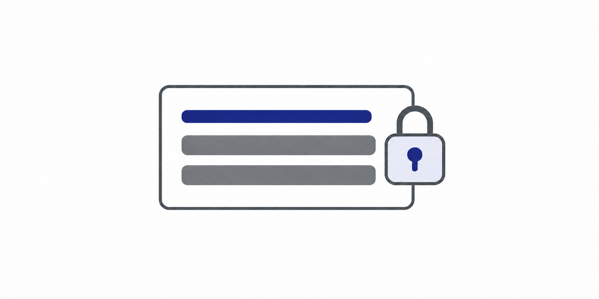
1774 x 887 | Reserve | illustration
A record protected by access controls
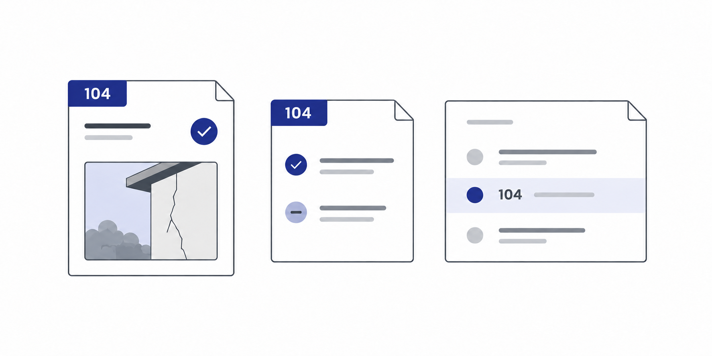
1774 x 887 | In use | illustration
Different views of the same customer case
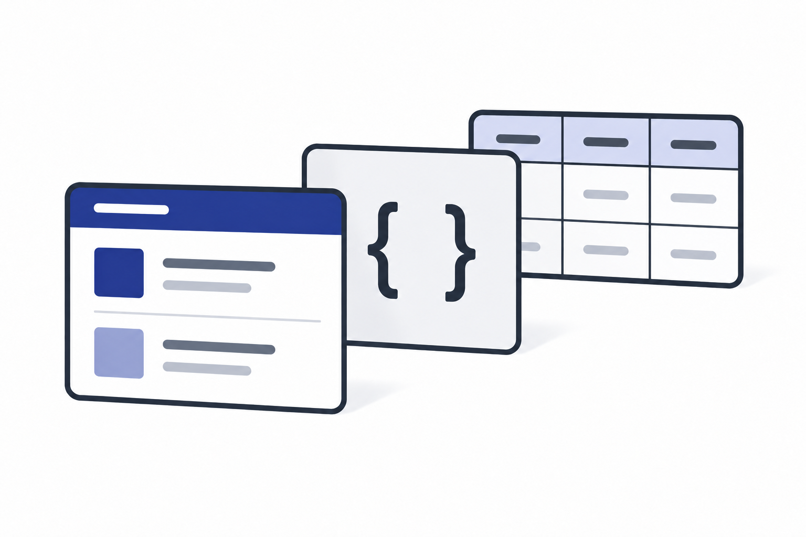
1536 x 1024 | In use | illustration
Interface, application logic and relational data
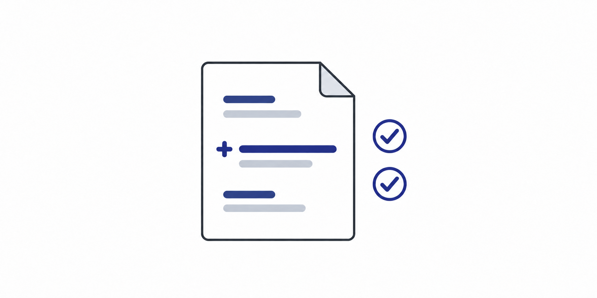
1774 x 887 | Reserve | illustration
A code change checked before release
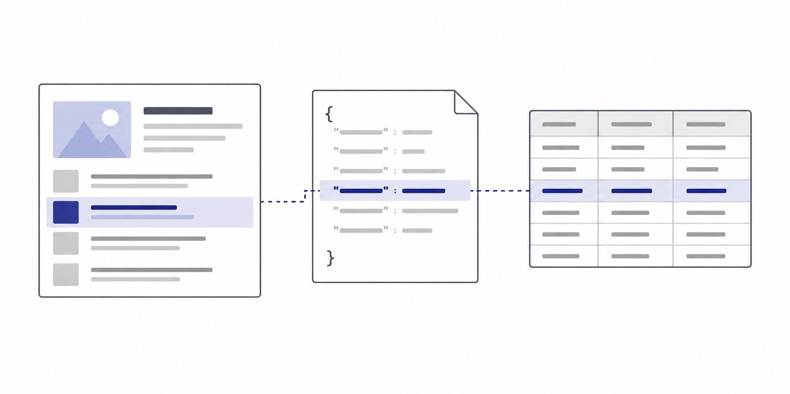
1774 x 887 | In use | illustration
One change across the interface, data contract and database
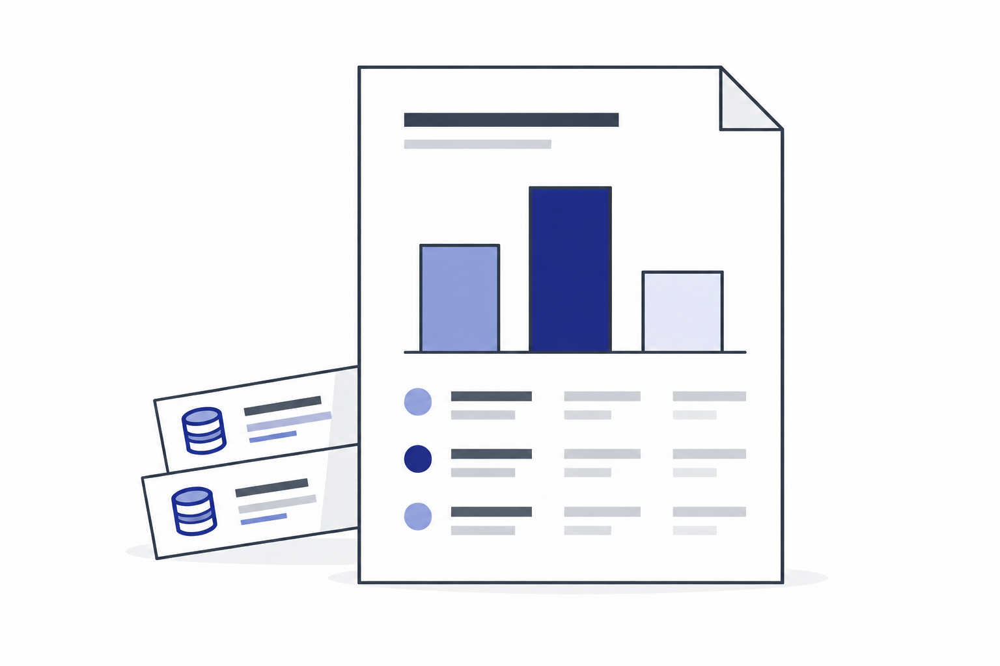
1536 x 1024 | Reserve | illustration
A business report with its data sources
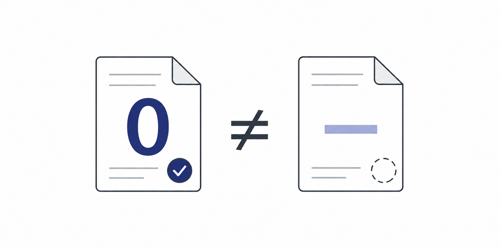
1774 x 887 | Reserve | illustration
A numeric zero is different from missing data
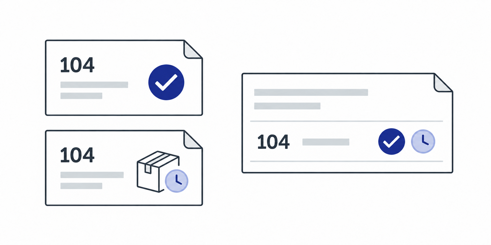
1774 x 887 | In use | illustration
Payment and fulfilment records matched by order identifier
600 x 300 | In use | illustration
A record protected by access controls
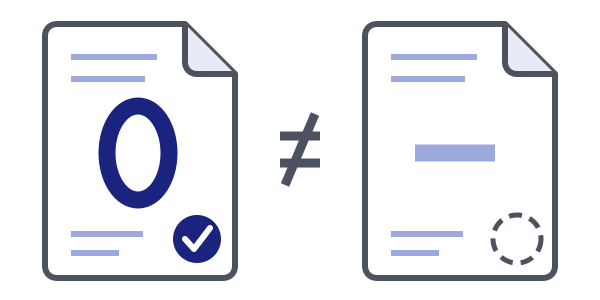
600 x 300 | In use | illustration
A confirmed zero is different from a missing value
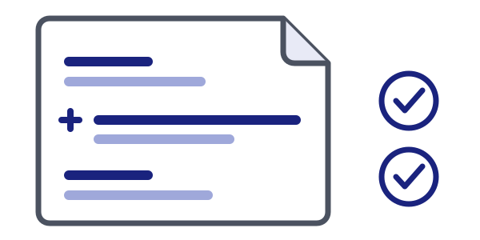
600 x 300 | In use | illustration
A code change and its verification checks
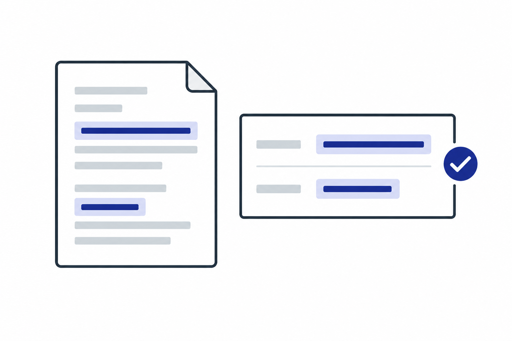
1536 x 1024 | In use | illustration
Highlighted document fragments become checked structured data
1536 x 1024 | In use | photo
The same company website adapted for laptop and phone screens
7360 x 4912 | Reserve | photo
Software development workspace
Image by frimufilms on Freepik
Reserve workspace photograph; includes hands.3936 x 2214 | Reserve | photo
Programming code on a display
Photo by Daria Nepriakhina on Unsplash
Fallback only.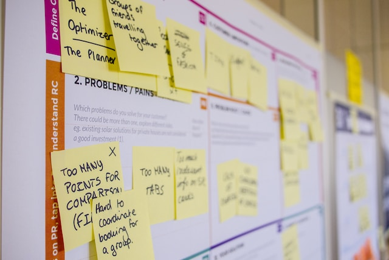
640 x 427 | Reserve | photo
Notes used to plan project requirements
Image by pressfoto on Freepik
Small original source; do not upscale.2400 x 1600 | In use | photo
Music studio
Photo by Caught In Joy on Unsplash
Original studio photograph restored from its 2400px source.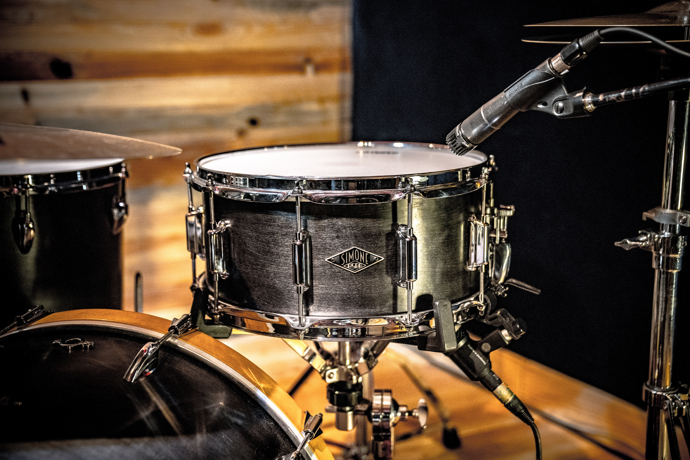
7744 x 5165 | In use | photo
Drums for original music production
Photo by ASBA DRUMS
3840 x 2160 | Reserve | photo
An abstract molecular structure
Photo by Ashraful Islam on Unsplash
Legacy reserve; not selected for software services.3024 x 4032 | Reserve | photo
An architectural geometric pattern
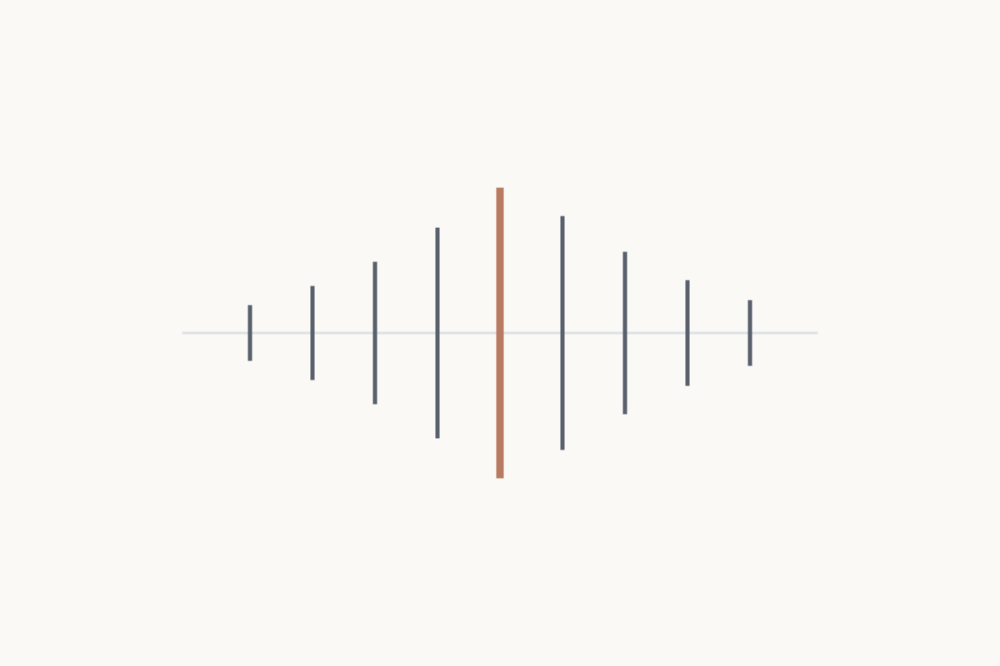
1200 x 800 | In use | illustration
A waveform for audio production services